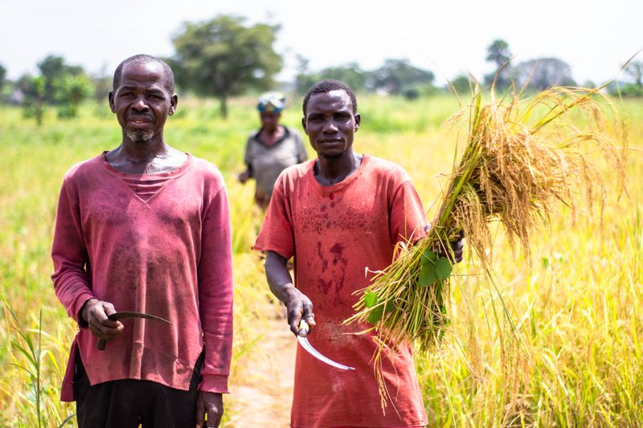
FOOD SECURITY & LIVELIHOODS
Supporting resilient and sustainable livelihoods.
→PEOPLE | COMMUNITIES | JUSTICE | PEACE
Working alongside communities across Northeast Nigeria to strengthen resilience, promote peace and create pathways to a more dignified future.
Communities across Borno, Adamawa and Yobe
WHO WE ARE
The Justice Development and Peace Initiative (JDPI) Maiduguri is the development and humanitarian organisation of the Catholic Diocese of Maiduguri, working with vulnerable communities across Borno, Adamawa and Yobe States. We accompany people and communities to build resilient lives, promote peace, uphold human dignity and create opportunities for a more just and peaceful society.
LEARN MORE ABOUT JDPI →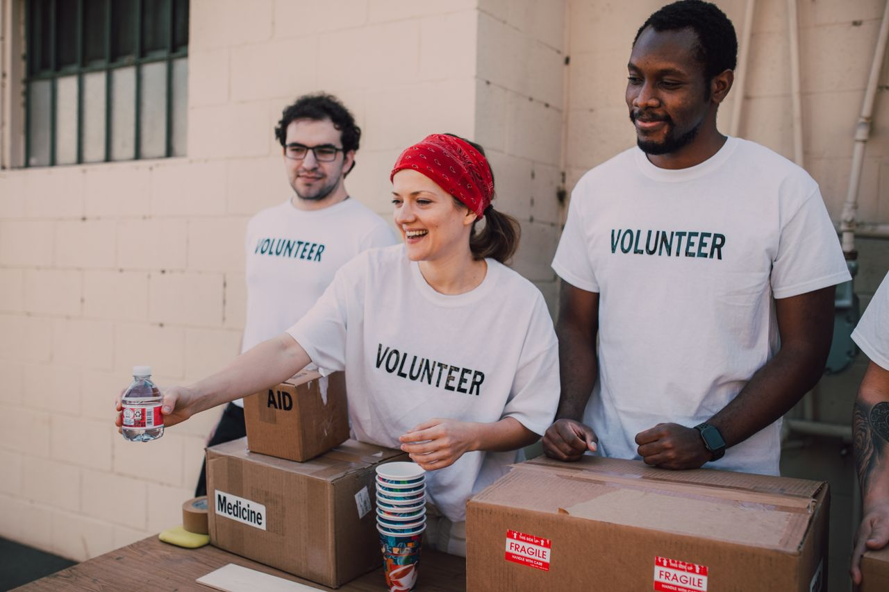
WHAT WE DO

Supporting resilient and sustainable livelihoods.
→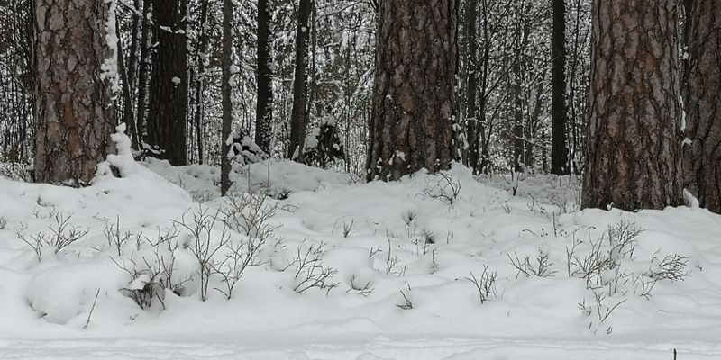
Improving nutrition for healthier communities.
→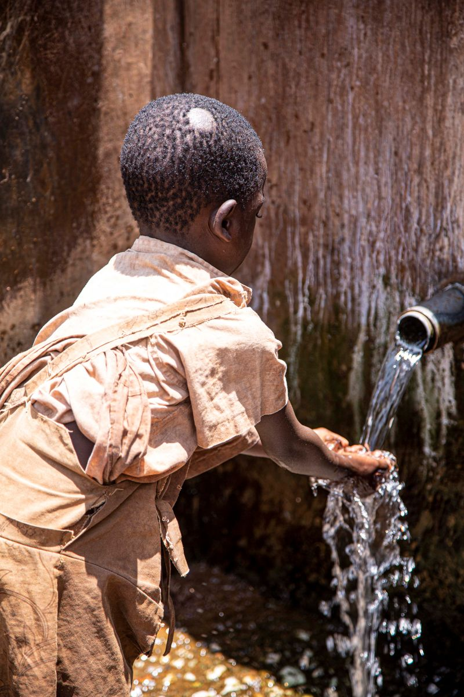
Expanding access to clean water and safer communities.
→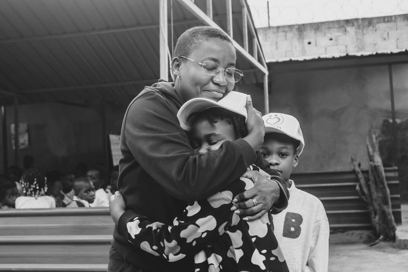
Promoting safety, rights and well-being.
→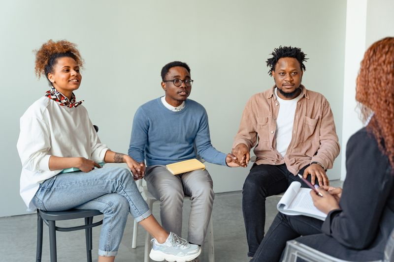
Supporting mental well-being and community resilience.
→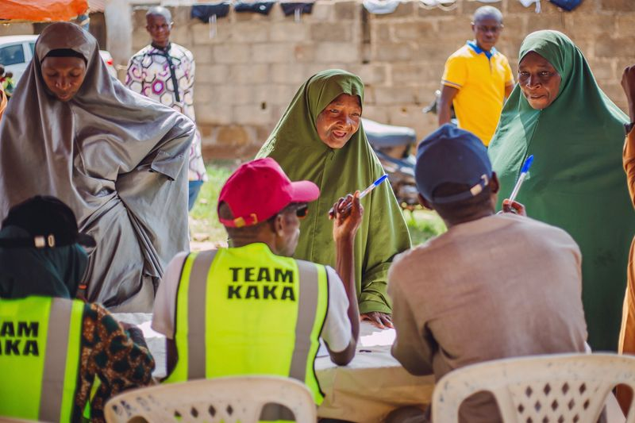
Strengthening social cohesion, peaceful coexistence and conflict resilience.
→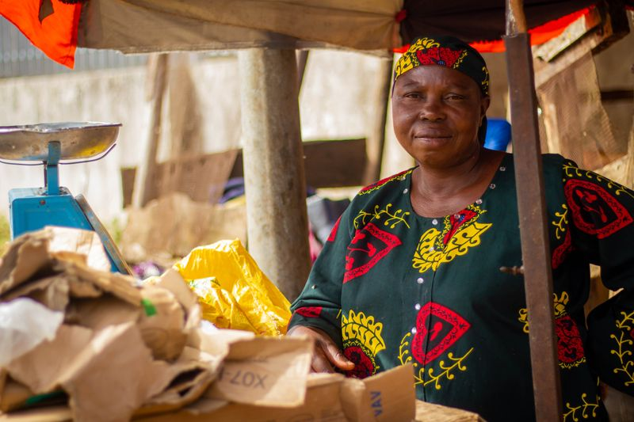
Creating opportunities for sustainable income and self-reliance.
→FEATURED PROJECTS
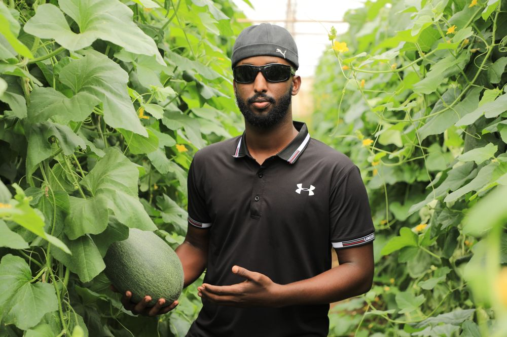
⌾
Strengthening the resilience of vulnerable households through integrated multisectoral support.
VIEW PROJECT →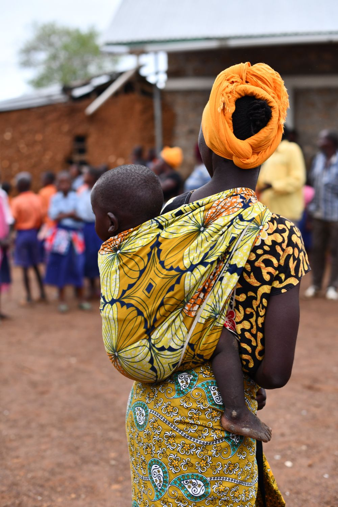
⌾
Improving nutrition and WaSH outcomes for mothers and children in conflict-affected communities.
VIEW PROJECT →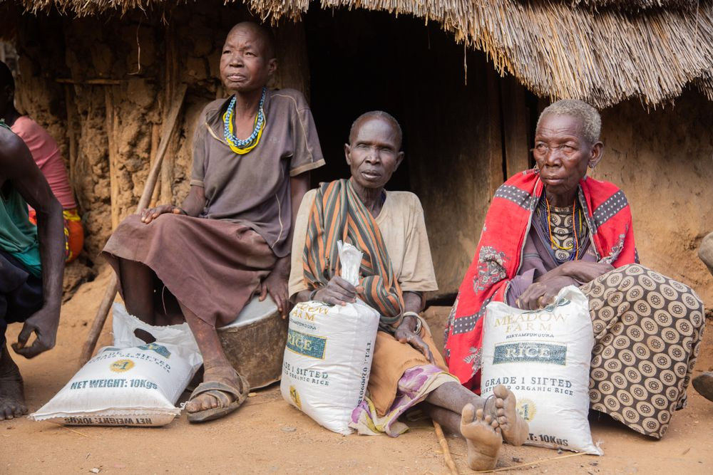
⌾
Supporting vulnerable communities through integrated nutrition and protection assistance.
VIEW PROJECT →⌾
Supporting children and communities through protection, education and resilience-focused engagement.
VIEW PROJECT →STORIES & UPDATES
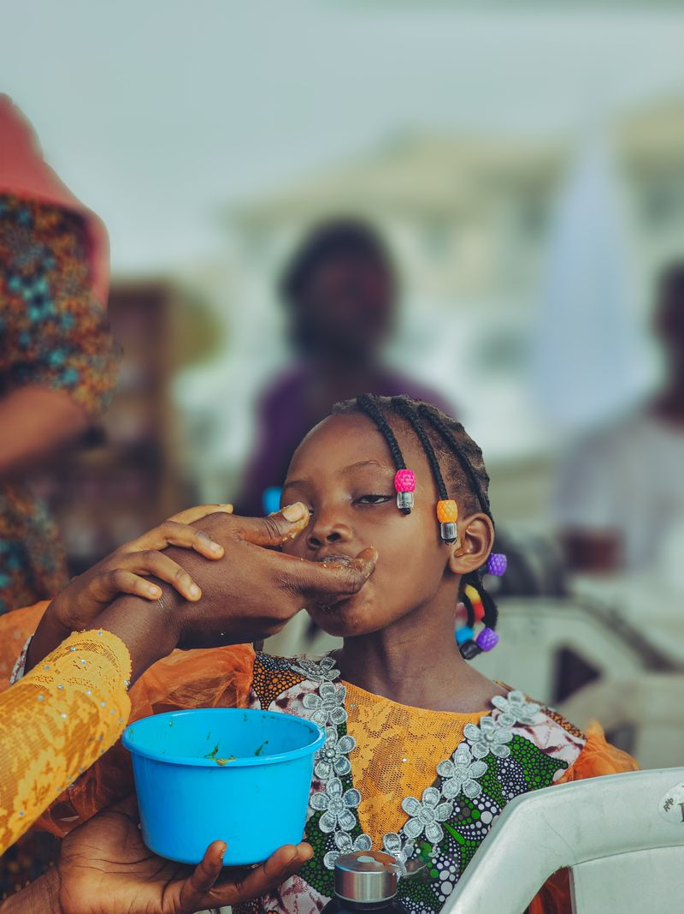
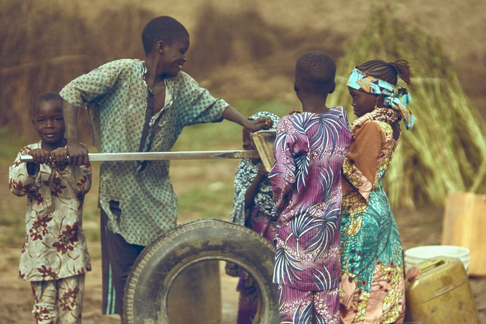
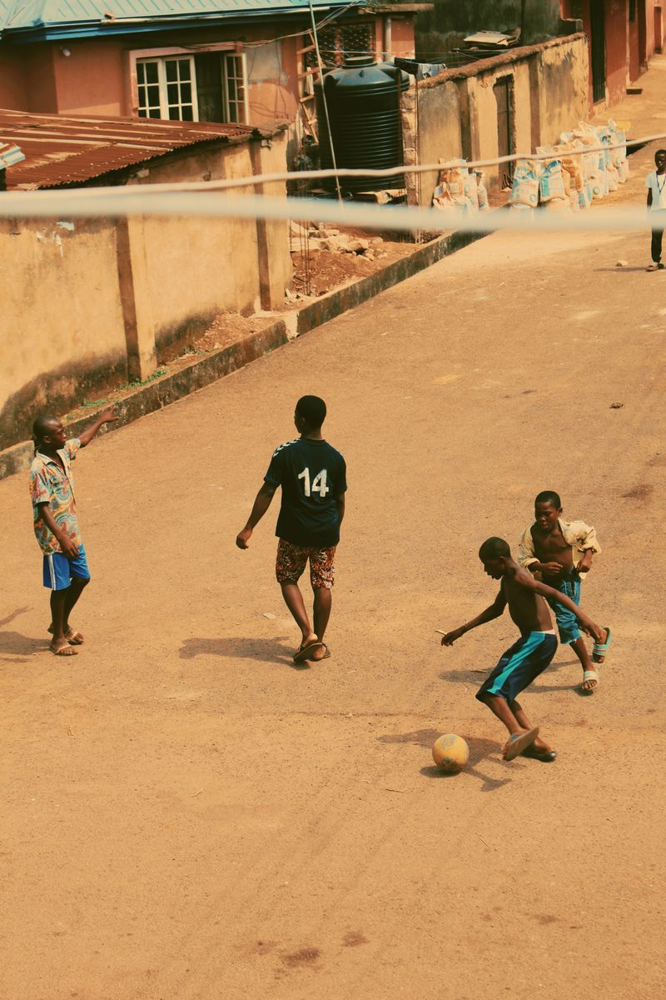
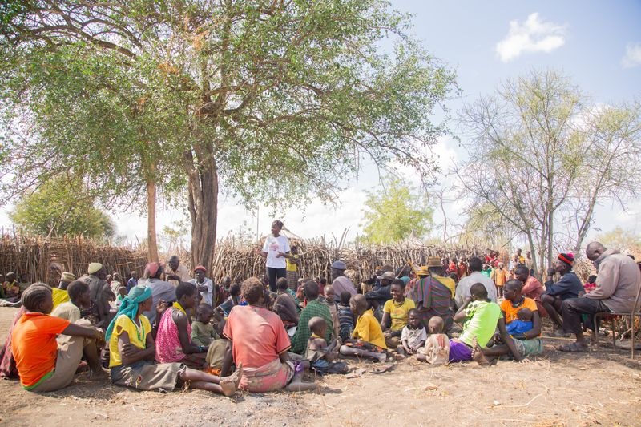
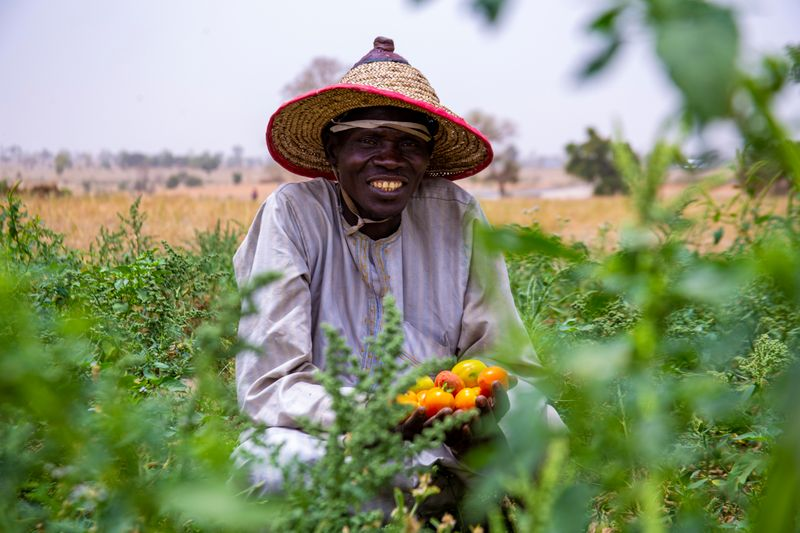
Our work is made possible through trusted partnerships.
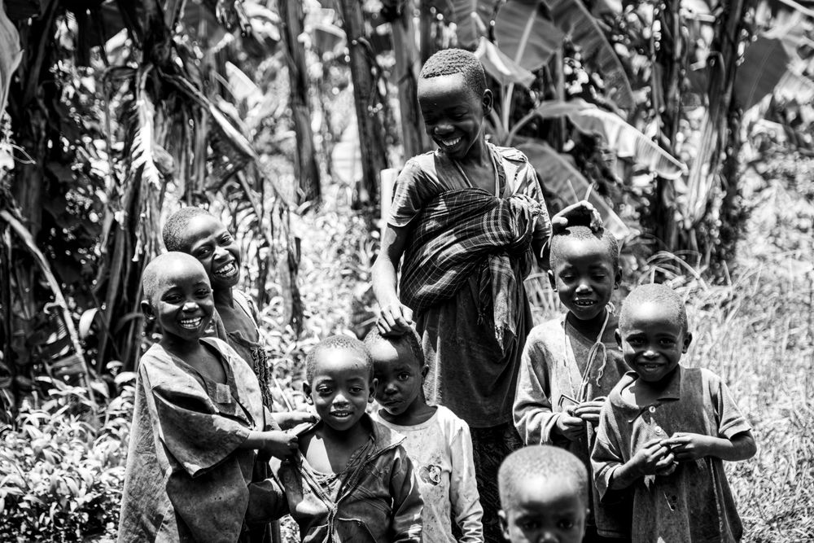
YOUR SUPPORT CAN
Your generosity helps us work alongside vulnerable communities to strengthen livelihoods, improve access to essential services, promote peace and restore dignity.